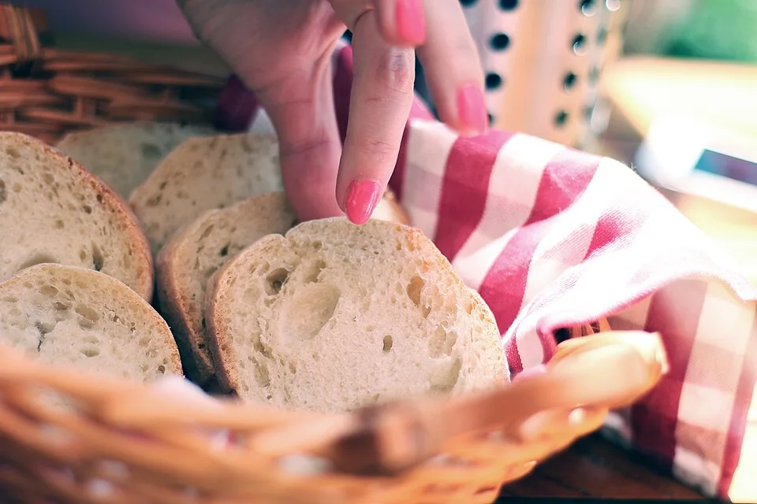

Baguette

Bildquelle | Zuletzt aufgerufen am
Schlanke Form, goldene Kruste, luftiges Inneres. Frankreichs täglicher Begleiter.
- Herkunft
- Frankreich
- Getreide
- Weizen
- Geschmack
- Knusprig & mild
Geschichte
Das Baguette ist eng mit der französischen Alltagskultur verbunden. Seine heute vertraute, lange Form setzte sich vor allem im 20. Jahrhundert durch. Über den genauen Ursprung kursieren verschiedene Geschichten; eine einzelne beliebte Legende erklärt seine Entstehung nicht zuverlässig.
In Frankreich werden Baguettes über den Tag verteilt in kleinen Chargen gebacken. Das handwerkliche Wissen reicht vom Mischen und Fermentieren bis zum Formen, Einschneiden und Backen. Seit 2022 stehen dieses Können und die Kultur rund um das Baguette auf der UNESCO-Liste des immateriellen Kulturerbes.
Quelle: UNESCO: Baguette-Handwerk und -Kultur | Zuletzt aufgerufen am
Eigenschaften
- Zutaten
- Für die klassische Variante: Weizenmehl, Wasser, Salz sowie Hefe und/oder Sauerteig.
- Geschmack
- Milde, aromatische Krume und deutliche Röstaromen in der dünnen Kruste.
- Kruste
- Knusprig und goldbraun, mit mehreren charakteristischen schrägen Einschnitten.
- Krume
- Hell und elastisch, mit unregelmäßiger Porung. Wie groß die Poren ausfallen, hängt von Teig und Verarbeitung ab.
Ein Stück Käse, etwas Butter oder Olivenöl genügen. Als Beilage nimmt die offene Krume Saucen gut auf.
Weitere Informationen
- Vier Grundzutaten Ein klassisches Baguette kommt mit Mehl, Wasser, Salz und einem Triebmittel aus. Zeit bestimmt das Aroma wesentlich mit.
- Anerkanntes Handwerk Die UNESCO würdigte 2022 die handwerklichen Kenntnisse und die gesellschaftliche Kultur des Baguettes.
- Die Kruste im Mittelpunkt Durch seine schlanke Form hat das Baguette im Verhältnis zum Inneren viel Kruste – ideal für alle, die es knusprig mögen.
Rezept
Ein einfaches Baguette-Rezept für zu Hause, ohne aufwendiges Kneten.
Baguette magique auf Chefkoch | Zuletzt aufgerufen am